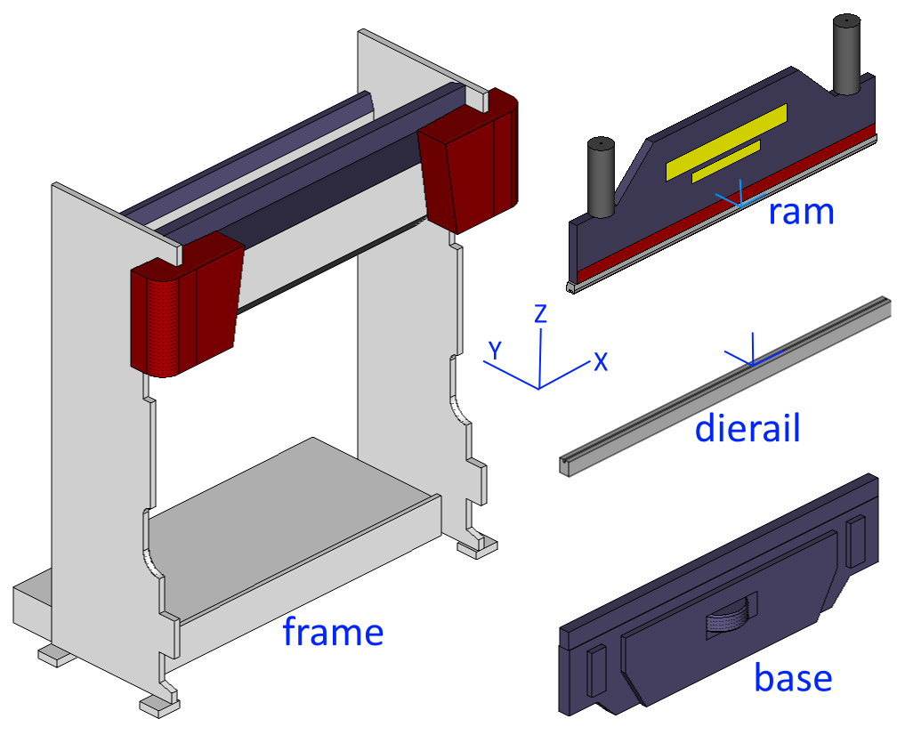
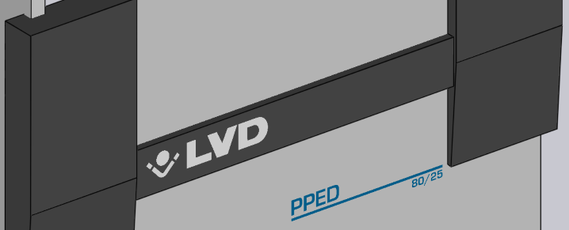
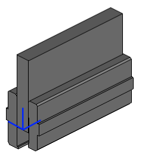
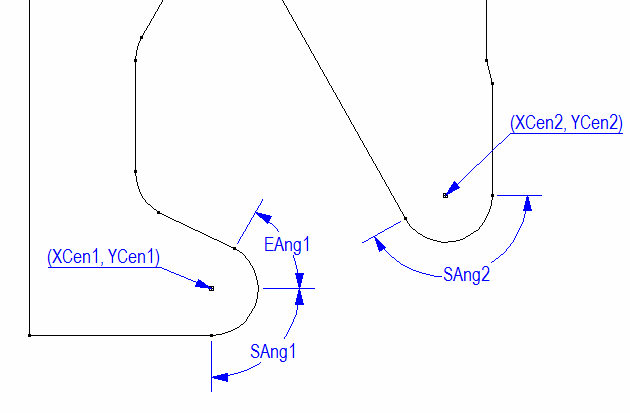
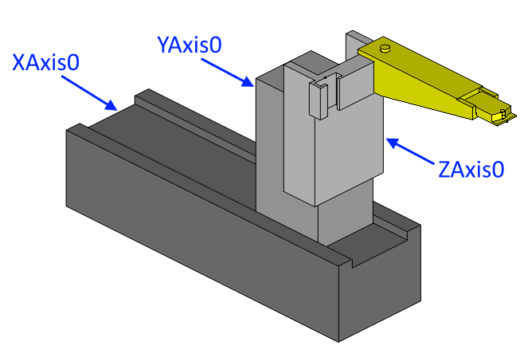
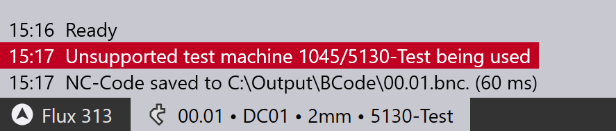

2016ImportBMC
product: flux org: metamation tags: [metamation, knowledge-base, flux, notes, legacy, tech] type: note project: Flux source: Notes/Tech/2016.ImportBMC.ftx updated: 2026-07-13
2016 ◉ Creating Bend Machines
[!info]- Revision history
Rev Date Author Note V1 2019-05-14 AV V2 2019-06-10 AV Further sections added for BendAid, BendGuard, ACB etc V3 2019-07-15 VL ExtraFiles section added for copying template files V4 2019-07-22 DS DontAutoFlipTool flag added to support machines where tools cannot be mounted in flip state V5 2019-11-06 VL Added MinTonnageFactor and Options section for setting ACB Classic, Wireless and Laser V6 2023-04-19 VL Updated Clamp section, toolmap, materials and other changes related to the technote in Case 35210
This document explains how to create bend-machines for Flux using a bmachine.ini file to provide machine data, and MetaCAM 3D models for the geometry. This is loosely based on the format that was used in MetaCAM (with the bendmachine.ini file), but has some key differences.
- The geometry is stored in a more modular form, with separate 3D models being used for different components like the frame, the ram, the die-rail etc. This makes it easier to share components between machines of the same family.
- There are no external files (like the accurpress.ini or cincinnati.ini etc). All the data required for the machine is stored in the bmachine.ini file.
Folder Structure
The starting point for the machine conversion is a bmachine.ini file. This file is read first, and will contain pointers to other files providing the component 3D models. For example, here are a couple of sections from a typical bmachine.ini file, providing models for the Beam and the DieBed.
[Beam]
Model=B23-5130-Druckbalken.sat
Shift=-1615,0,-120
|
[DieBed]
Model=B23_Tisch_120.geo
XSpan=-1615,1615
Shift=0,0,100
Flux will try to find this geometry file in the same folder where the bmachine.ini file exists. If that does not work, it will look in the parent folder, and will keep searching upwards until it can locate the file.
The reason for this is the following: this particular frame model (B23-5130-Druckbalken.sat) could be shared by multiple Trumpf machines. Instead of storing a copy of this file in each of these machine folders, we could simplify things by storing these in a parent folder. Below, for example, is a set of files and folders taken from the Komatsu press brakes repository. Assume here that names in capital letters are folder, and names in lower case are files.
C:\
KOMATSU
komatsu.png
PAS-SERIES
frame-2005.3d
base-2005.3d
PAS5020
bmachine.ini
PAS5012
bmachine.ini
PVS-SERIES
...
In this figure you can see that the frame-2005.3d is placed in a folder where it can be shared by both the PAS5020 and PAS5012 machines. And the komatsu.png file is placed even higher, and could be shared by PAS-SERIES machines and PVS-SERIES machines.
You can use this search mechanism to easily ensure that you never need to have two copies of any file. Files that can be shared in this way are 3D files, PNG files (for decals), and other INI files like the material maps or tool maps.
Non-geometry Sections
The BMachine.ini file contains several mandatory sections (and some optional ones, depending on whether the machine has clamps, whether the back-gauge system is modeled etc).
The MacData section
This is a mandatory section that provides basic machine data. Here's an annotated example.
[MacData]
ID=120300 ; the Flux machine ID
Brand=TruBend ; machine brand / manufacturer
Name=1066 2A Wila ; machine name (this is the short name that appears in machine selector)
NCName=TruBend 1066_B22 ; machine name to use in NC code (optional)
Wibu=TRUBEND_5130_B23 ; machine package to use for WIBU licensing
OpenHeight=385 ; open height of the machine, in mm
ClosedHeight=170 ; closed-height of the machine, in mm
TableLength=3230 ; table length, in mm
NCXCenter=1615 ; NC ordinate at center of the machine table (optional)
Tonnage=1300 ; press force, in kN
MinTonnageFactor=0.04 ; minimum machine tonnage, as a factor of maximum tonnage (optional)
PunchValency=PTrumpf ; beam valency (as MetaCAM integer ID, or Flux name)
DieValency=DTrumpf ; die-rail valency (as MetaCAM integer ID, or Flux name)
ToolMap=std-tools ; Pointer to the tool map (if needed for this machine)
DontAutoFlipTool=0 ; Don't flip tools while doing auto tool when the value is set to 1
- The punch valency and die valency can both be provided as Flux names, or as MetaCAM integer Ids. See the appendices at the end of this document for details on the valency names.
- The [Materials] section contains the material mapping for this machine.
Here is how a MaterialMap might look.
[Materials] ALUM=1 A5052P=1 SPC=2 SECC=2 SUS304=5 ...
For some machines (like Trumpf B23 machines), the MaterialMap is even simpler, and is really just a list of materials the machine knows about (there is no mapping). Here's the material map for a typical Trumpf machine.
[Materials]
Names = St37, 1.4301, AlMg3,
- The ToolMap entry is an INI file containing mapping tools to codes used by the controller. Note that the .ini extension is implied, and does not need to be specified in the ToolMap key. Likewise the ToolMap is the INI file. These files are searched for using the same search algorithm explained in the Folder Structure section above.
Here's how a ToolMap file might look.
[ToolID]
AMD-004=64
GN028A=1
PHA-3=1
1VHC=5
DHB=2
...
Like the material mapping, tool mapping can also be done in the [ToolMap] section like this.
[ToolMap]
AMD-004=64
GN028A=1
PHA-3=1
1VHC=5
DHB=2
...
The NCCode section
This section is quite simple, and contains the NC code type and the extension used in the code.
[NCCode]
Type=Jupidu
Extension=jupidu
ControlType=B23 ; NC-control type (optional, except for Trumpf machines)
The Type value contains either an NC code type name, or an integer code as used in MetaCAM's bendmachine.ini files. For B23 machines, always set the Type to Jupidu, and then Flux will use either Jupidu or BNC depending on whether the Jupidu option switch is set in the Flux installation.
The ACB section
This section is present if the machine has ACB classic or ACB wireless as an option, and it provides some basic information about the ACB system.
[ACB]
MinDistBetween=640 ; minimum distance between 2 ACB sensors
MinDistToCrowning=350 ; minimum distance between angle sensor and crowning sensor
MaxDistCrowningToCenter=300 ; maximum distance crowning sensor to table-center
MaxDiskMeasures=2 ; max measurements per bend
The Extra section
The values in this section are all copied to the machine's Extra dictionary. The exact set of values that are needed here depends on the post (NC code type) for the machine. All the values here are treated as strings. Here's an extract from the Extra section for a Komatsu machine.
[Extra]
DieMinWidth=50
DieWidthPitch=10
BackStopWidth=60
BackStopThickness=13
BackStopDepth=50
MachineName=PAS5020
PunchHolder=PHB-3
BGDeltaY=0
PHB-3=0,100,-6.5,0
PHG-B=0,148,-6.5,0
...
For many Trumpf machines, the [Extra] section is much simpler, and looks like this.
[Extra]
LeftBGName=SixAxis_B03_Default_Left
RightBGName=SixAxis_B03_Default_Right
The ExtraFiles section
This contains the template file name that has to be used by the post for the machine. This file is searched by using the same search algorithm explained in the Folder Structure section above. Here's an extract from the ExtraFiles section for a Dener machine.
[ExtraFiles]
Template=template.dld
The Settings section
The settings section looks like this, and contains various speeds, and other default-overrides.
[Settings]
BGXSpeed=1000
BGY1Speed=1000
BGY2Speed=1000
BGZ1Speed=330
BGZ2Speed=330
The settings here get saved to a settings.curl file in the machine output folder. Here is an example of a settings.curl file that contains all the possible settings that can be set using this section. The values below are the defaults for all machines, and you only need to specify the settings that are different from these defaults.
(FluxSettings){
Bend:{
OpDefault:{
RamVClosing:200 RamZSafety:6 RamVPinch:10 RamPinchCorrect:0 RamPinchDelay:0 RamVBend:5 RamBendDelay:0.1
RamVDecompress:10 RamZDecompress:0.5 RamZRelease:15 HemMutePoint:20 RamVOpen:200 RamZOpen:100
RamMinZOpen:10 AngleCorrection:0 MinAirgap:50 BGXSpeed:1000 BGY1Speed:1000 BGY2Speed:1000
BGZ1Speed:330 BGZ2Speed:330 BGTransitionDelay:0 BendToolShorterBy:5
}
}
}
The Options section
This section looks like this and the ACB options are set to 0 or 1 depending on whether that is supported by this machine. Also the relevant ACB data should be present in ACB section or ACBLaserF etc.
[Options]
ACBClassic=1 ; sensor disk based ACB
ACBWireLess=1 ; wireless ACB
ACBLaser=0 ; laser ACB
Geometry Conventions
There is some basic machine geometry required for all machines. The image below shows these basic components. These, in addition to the back-gauge geometry is all that is required to get a minimal machine working. In practice, there are often additional geometry sections (like bend-guards). These four components shown below are modeled as separate 3D models (or they could also be modeled as extrusions, specified with a 2D geometry and an extrusion length):

Here are some notes on the origin points:
- The dierail is drawn so that the origin point lies exactly in the center, and where the zero-position of a die would be. The base and frame are drawn in the same reference coordinates so that if these three models are just glued together they will connect correctly without any gaps.
- The ram is drawn so that the origin lies exactly at the center of the mounting rail. This is different from the way it is often drawn with MetaCAM bendmachine.3d files, so take care with this. A quick check is this: if you paste the ram model into the dierail model, they should both be touching exactly with their mounting surfaces (in other words, the closed-height should be zero).
- If the machine has a clamping system, the ram is drawn so that the bottom center of the ram is lifted to the clamp height from the origin. In other words, in this case the Z-origin of the ram model is where the top of the clamps will get mounted.
Using MetaCAM 3D models
Especially when migrating machines from MetaCAM, it is common to represent geometry using MetaCAM 3D models. The notes below are relevant if you are using MetaCAM 3D models.
Layer conventions
When drawing all these 3D models, try to minimize the number of layers used. The only reason to use multiple layers is if the component has multiple colors. As such, it is only necessary to have as many layers as there are colors. Unlike with the bendmachine.3d files, the actual layers names are not important, and you can use any names that you like. For example, you could use layers names that like White, Gray, Blue to make the layering more clear.
Decals on geometry
We try to represent logos, machine model numbers etc with decals, which are just bitmaps that are painted on top of the model like a texture. This uses far less graphics resources, and you can use as many colors as needed in these decals. Since MetaCAM does not have a way to actually paste a decal into a model, we use a simple convention.
At the position where a decal is required, just draw a simple rectangular plane, and use a special layer name to tell Flux that this is just a place-holder for a decal. The plane should be drawn in a layer whose name looks like Decal:komatsu or Decal:maxform-9. The part after the colon is the filename of the PNG file that contains the image for the decal, and Flux will search for this decal file using the standard rules explained above. The position and size of the rectangular plane will determine where the decal will appear and how big it will be (the actual rectangular plane will be removed, so the color of this plane is not important).
Here are some additional notes:
- For best results, make sure that the aspect ratio of the decal placeholder you draw matches the aspect ratio of the decal PNG file you are using. For example, if the PNG file is 1500x400 pixels in size, make sure the plane has an aspect ratio of 15:4.
- Create the decal PNG file with a transparent background. Do not try to match the color of the underlying geometry, there will always be subtle differences. (This is also the reason that only PNG files are used for decals).
- Draw the Decal placeholder plane 3mm in front of the actual geometry it is supposed to be painted on. If you draw it exactly on the geometry the decal will not render properly (it may get clipped to the background behind the geometry).
- A machine can contain only 3 decals. The decals can be pasted on the frame, the base, the ram or to any geometry. If a decal is painted on the ram, it will automatically move with the ram.
The image above show two decal placeholders on the ram (the yellow rectangles). When the machine is rendered in Flux these are replaced with the actual PNG images, as the image below shows.

Using SAT/IGES files for Geometry
Geometry can also be supplied using SAT/IGES or any other 3D file format that Flux can read. This is the common practice when creating Trumpf machines, since there usually exist SAT files providing the geometry. Very often, this geometry does not have the correct coordinate system as required for this process, so one can use a Shift vector to move the geometry. For example.
[Beam]
Model=B23_5130_Druckbalken.sat
Shift=-1615,0,-120
Most often, you will find that the Trumpf beam models have to be shifted like this: the -1615 represents half the table length, and the -120 represents the reference punch height used in the Trumpf machine models.
It is possible to compose a component using multiple separate models, and one can also apply decals on top of models. Both of those are described here.
[Frame]
Model=B23_5130_Zylinderabdeckung.sat
Shift=-1615,0,100
Model2=IAxisDrive.mesh
Shift2=-1459.5,0,-20
Model3=IAxisDrive.mesh
Shift3=1459.5,0,-20
Decal=TruBend5130.png
DecalPos=-795,-137,995
DecalScale=0.5
In this particular example, the frame is described using 3 separate 3D models (each with its own different shift vector), and there is finally a decal pasted on the model.
Using Extruded Geometry
Also very common (in the Trumpf world) is to specify geometry using an extrusion of a 2D cross-section. The extrusions is always in the X direction, and the 2D geometry is specified using a GEO or DXF file.
[DieBed]
Model=B23_Tisch_120.geo
XSpan=-1615,1615
Shift=0,0,100
The example above is typical of the shift required to position the die correctly, because Trumpf die-rail drawings are usually drawn with a reference point that is 100mm above the mounting point on the rail (100 is the reference die height). The XSpan value indicates that the die is extruded 1615 mm on either side of the center-line.
Geometry Sections
The conventions for providing geometry listed above are used to actually provide the machine geometry, and we list those geometry sections below.
Core Geometry
These are the geometry sections that are mandatory for every machine.
The Frame section
The mandatory Frame section provides the geometry for the machine frame. Here is a typical example from a Trumpf machine.
[Frame]
Model=B23_5130_Zylinderabdeckung.sat
Shift=-1615,0,100
The Beam section
The mandatory Beam section provides the geometry for the press-beam. The beam should be drawn so that the center-point of the mounting surface is at 0,0,0. (Alternatively, one can use a shift vector to shift the geometry so it aligns to this constraint). For example.
[Beam]
Model=B23_5130_Druckbalken.sat
Shift=-1615,0,-120
The DieBed and DieRail sections
These sections describe the geometry of the die-bed (table) and the die-rail. The reason they are separated is that for many machines the die-rail can move forward or backward in the Y direction using the I-Axis drive. Here are examples from a Trumpf machine.
[DieBed]
Model=B23_Tisch_120.geo
XSpan=-1615,1615
Shift=0,0,100
|
[DieRail]
Model=B23_UW_Klem_105mm.geo
XSpan=-1615,1615
Shift=0,0,100
Optional Geometry
These sections provide optional geometry elements that may or may not be present for a given machine.
The Clamp section
This section is present only if the machine has clamps. Flux will get the geometry from clamp-komatsu.3d model to get the 3D model of the clamp, the count of how many clamps exist and the rest of the clamp data from this section. Here's how that file could look.
[Clamp]
Count=11
Model=clamp-komatsu.3d
MinPitch=160
Pitch=180
Shift=0,0,350
The clamp 3D model contains only one clamp, and is drawn with the origin aligned to the left-edge of the clamp, with Z at the bottom (where the punch would be mounted). Use a Shift vector to shift the geometry so it lifts up to the Z of the ram model (usually the Z of shift vector is the OpenHeight). Here's an example, where the blue marker indicates where the origin would lie.

Note 1: The clamp model is often repeated several times in the machine. As such, it is worth spending some time to make sure this model is as lightweight as possible (as few surfaces as possible).
Note 2: The INI file does not provide the X-position of the first clamp. This is not required; Flux will figure it out automatically on the assumption that the set of all clamps is centered in the machine.
ACB Laser sections
If the machine has ACB-Laser (or LCB), these sections are used to provide the geometry for the sensors.
[ACBLaserF]
Model=SensorF.mesh ; model used for LCB front sensor
Stroke=-1810,1653 ; stroke in X direction
Shift=192.7,0,100 ; shift-vector to position model at X=0 laser position
|
[ACBLaserR]
Model=SensorB.mesh ; model used for LCB rear sensor
Stroke=-1810,1653
Shift=192.7,0,100
Bendguard section
If the machine has a laser-safety system, this section is used.
[BendGuard]
BeamWidth=74 ; laser beam-width (used for BoxHeight calculation)
Model=B23_5130_BendGuard_Links.sat ; left bend-guard emitter model
Shift=-1615,0,-120 ; shift to align this (assuming punch height = 0)
Model2=B23_5130_BendGuard_Rechts.sat ; right bend-guard collector model
Shift2=1615,0,-120
|
[BendGuardCover]
Model=BendGuardCover-L.sat
Shift=-1615,0,-120
Model2=BendGuardCover-R.sat
Shift2=1615,0,-120
Back-gauge information
The back-gauges are a bit complex, since a complete machine definition can also include the mechanisms that move the gauge fingers. Also, this section has to describe the gauging geometry, in terms of the flat and clamping type gauging surfaces for each gauge. The gauge information is provided in several sections,
The BGSystem section
We start with the BGSystem section that defines some basics (remember that X,Y,Z in this discussion refers to the Flux coordinate system).
[BGSystem]
Count=2 ; Count of gauges
MinXSpacing=190 ; Minimum spacing between gauges
LockedYZ=0 ; if set, gauges move together in Y and Z
MaxYDifference=9999 ; if set, defines maximum gap between Y1 and Y2
ManualX=0 ; if set, then this is a 2-axis gauging system
Model=B23_An6_LaufHinten.geo ; gauge-system rails (optional)
Shift=0,65.9,100
XSpan=-1350,1350
Model2=B23_An6_LaufVorne.geo
Shift2=0,65.9,100
XSpan2=-1350,1350
Mechanism=XZY ;The order in which bg mechanism moves. Default is XYZ for 6 axis and for others it is YZX
- Setting LockedYZ=1 makes this effectively a 2,4 or 5 axis gauging system. If MaxYDifference is to a non-zero value it means that Y2 can move a bit relative to Y1 (and this is a 5-axis gauging system). If ManualX is set to 1, then it means that the gauges can be moved in X only manually (by the operator), and this is a 2-axis gauging sytem.
- If LockedYZ=0, then this is a 6-axis gauging system and MaxYDifference is ignored.
- The Model, Model2 etc entries above provide the geometry for the gauge-system rails. These are merely a cosmetic detail and can be omitted (they are not used for collision checks).
- Mechanism tells the order in which BG carriers moves. XZY mean moving X carrier will move both Z and Y carriers along with X. Moving Z moves Y and moving Y moves the backgauge model.
The BG1, BG2, sections
Sections like BG1, BG2 etc define the set of gauging surfaces for each of the gauges. These sections must also provide a model, and that model should be drawn so that the origin is at the 0,0,0 reference point of the gauge. All the measurements in this section are relative to that origin point. Here is an example of a gauge definition for a Trumpf 6-axis gauge.
[BG1]
Model=AnLiNeu.sat
Stroke=-1235,1235, 3,600, -50,200
SurfaceCount=5
S0Type=Flat
S0Params=0,8, 26,0, 52
S0Support=0
S1Type=Flat
S1Support=1
S1Params=8,25, 15.5,30, 31
S2Type=Flat
S2Support=1
S2Params=25,49, 39.5,260, 79
S3Type=Finger
S3Support=0
S3Params=0,8, 52,8,8,-90,60, 82,24,8,-150,0
S4Type=Finger
S4Support=1
S4Params=8,25, 31,38,8,-90,60, 71,54,8,-150,0
- The Stroke is a set of 6 numbers X1,X2, Y1,Y2 and Z1,Z2 that define the range of movement of the gauge in the X,Y and Z directions. These limits refer to the cuboid within which the reference point of the gauge can move. In addition to this stroke, the gauge movement is also constrained by the MinXSpacing value from the BGSystem section, so Flux will prevent the gauges from getting too close to each other.
- The surfaces of the gauges are numbered from 0 .. SurfaceCount-1, and for each surface, there is a surface type (flat or finger), defined by a set of parameters (see below). The values like S0Support, S1Support etc are set to 0 or 1 depending on whether that particular surface is a supporting surface (meaning the part is laid on the gauge if that surface is used for gauging).
Surface definitions
There are several different types of gauging surfaces that can appear in the BGn section. In the example above, there are 5 surfaces; the first 3 are Flat and the next 2 are Finger. For each different type of surface definition, there is a different set of parameters that you can see in the values like S0Params, S1Params etc.
SnType=Flat
A flat-type surface is defined using 5 parameters as shown below.
S1Params=8,25, 15.5,30, 31
These 5 numbers are Zmin,Zmax, Xcen,Y, Dx, with the following meanings:
- Zmin, Zmax define the limits of the surface in the Z axis, relative to the reference point of the gauge. In this example, the surface stretches from Z=8 to Z=25.
- Xcen, Y define the X and Y coordinates of the center-point of the gauging surface, relative to the reference point. In this example, the gauge surface is 30mm behind the reference point in Y
- Dx is the width of the gauging surface in X. Taken in conjunction with Xcen, you can also see that in this example, the gauging surface stretches from X=0 to X=31 in this example (Xcen - Dx/2 .. Xcen + Dx/2)
SnType=1
This is very similar to the Flat surface type, except that the parameters are specified slightly differently. This is mainly for compatibility reasons with older MetaCAM bendmachine.ini files.
S1Params=8,25, 30, 0,31
The 5 numbers here are Zmin,Zmax, Y, Xmin,Xmax. Instead of specifying the surface limit in X as XCen and Dx, the surface is specified using Xmin and Xmax.
SnType=Finger
This defines a finger type gauging (which uses 2 cylindrical surfaces). There are more parameters for this type.
S3Params=0,8, 52,8,8,-90,60, 82,24,8,-150,0
The values here are Zmin,ZMax, Xcen1,Ycen1,R1,Sang1,Eang1, Xcen2,Ycen2,R2,Sang2,Eang2 with the following meanings:
- Zmin, Zmax define the extents of the cylindrical surface in Z (the bottom and top Z of the cylindrical surface).
- Xcen1, Ycen1 define the center point of the first cylinder in the top view (see image below).
- R1 is the radius of the first cylinder
- Sang1, Eang1 are the start and end angles of the gauging surface, going CCW around the center with East = 0 (see image)
- Xcen2, Ycen2, R2, Sang2, Eang2 are the corresponding values for the second cylindrical surface.
This image should make these values more clear:

SnType=2
This is also a finger gauging definition, with exactly the same 12 parameters as above. It is maintained for compatibility with MetaCAM.
Back-gauge carriers
It is possible to model the back-gauge carriers that support and move the gauges. This is not found for most of the MetaCAM bend machines, but we have this for all the Trumpf machines. Different gauging systems will require slightly different approaches here.
6-axis back-gauge system
For a 6-axis BG system, you must prepare 6 models containing the moving parts for the X, Y and Z axes of each of the gauges.

The image above shows the three models you need to draw for the left gauge - they are the ones labelled XAxis0, YAxis0 and ZAxis0. These are all shown together as one model here, but they are to be saved as separate 3D models, and of course the gauge model that is shown here in yellow is not part of this set of carriers models.
To get these pieces in the correct location that Flux expects, position the entire system so that the gauge reference point is at the origin. This might mean moving the various components in X Y and Z until the gauge reaches this position. The model at this point should look correctly composed as shown in the image above. Then, split up the components and save the three axis drives separately. The gauge model can now be deleted (since it is already part of a gauge.3d file).
Then, INI sections like these are added to introduce these models to Flux. This example below is from a Trumpf 6-axis machine.
[BG1X]
Model=B23_An6_XAchs.geo
Shift=0,65.9,100
XSpan=-88,88
[BG2X]
Model=B23_An6_XAchs.geo
Shift=0,65.9,100
XSpan=-88,88
|
[BG1Y]
Model=an6_YAchsNeu.geo
Shift=0,229.9,100
XSpan=-90,90
[BG2Y]
Model=an6_YAchsNeu.geo
Shift=0,229.9,100
XSpan=-90,90
|
[BG1Z]
Model=an6_ZAchsNeu.geo
Shift=0,229.9,0
XSpan=-88,88
[BG2Z]
Model=an6_ZAchsNeu.geo
Shift=0,229.9,0
XSpan=-88,88
Importing a BendMachine into Flux
Machines are imported from the bmachine.ini format. In Flux application you can import machines using these steps:
- To import a machine, create an FXCMD file like this
and invoke flux.exe with this FXCMD file as parameter.
[Header] Type=FluxCommandFile [Command] Type=ImportBendMC InputFolder=W:\BMC\1001 - The bmachine.ini file containing the machine definition and the required geometry files should be in the input folder. The machine will then be imported and will also be set as the default bend machine.
- Note that you should use bend machine IDs between 1001 and 1999 only. This range of IDs is reserved for test machines that are being created outside of Metamation. Once the machine is created and tested, you can send the data file to Metamation and it will become an official machine with a proper ID.
- Note that Flux will automatically create the machine in /Machine/ folder, where is your Flux data folder and is the machine ID. If this folder already exists, the command will fail (to avoid overwriting data, so you have to delete that folder before running this).
- These test machines are not meant to be shipped to customers - in fact, a warning like this is
displayed whenever the machine is used.

It is likely these FXCMD will be removed later, and replaced with API functions to import/export machines, since these are not likely to be used by end-users.
Converted from the FTex source
Notes/Tech/2016.ImportBMC.ftx— see [[Flux Notes]] for the index.